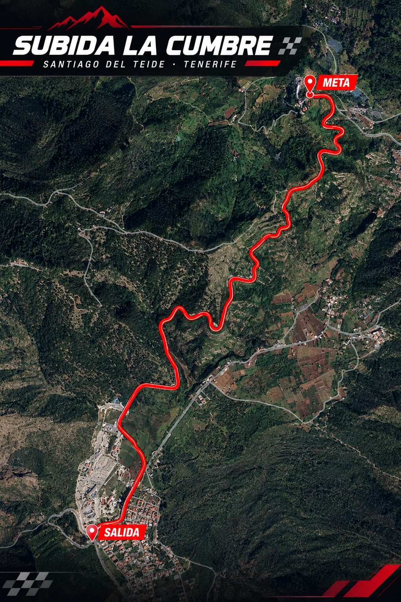

01 / PREVIO
Verificaciones
Verificaciones administrativas y técnicas de los vehículos participantes. Lugar y horario pendientes de publicación.
I Edición de la subida La Cumbre Santiago del Teide.
Estamos encantados de anunciar esta nueva prueba de montaña en este tramo tan bonito de Tenerife. ¡Mucha suerte a todos los participantes!
La subida de la Cumbre tiene un trazado muy técnico que no permite errores, pero a su vez, es una de las carreteras más bonitas de Tenerife.
1ª Edición de la Subida a La Cumbre | 3/10/27
Verificaciones: 2 / 10 / 2027
Prueba: 3 / 10 / 2027
Verificaciones administrativas y técnicas de los vehículos participantes. Lugar y horario pendientes de publicación.
Información sobre reconocimientos, briefing y horarios oficiales pendiente de aprobación por la organización.
Entrenamientos y mangas de carrera según el reglamento particular y el programa horario definitivo.
Consulta aquí los datos técnicos del recorrido, el mapa de acceso, las zonas habilitadas para el público y los cortes de carretera cuando la organización los publique.

Accede al formulario de inscripción de la I Edición. Los datos y documentos definitivos se confirmarán en el reglamento particular.
Participa · Inscripción ↗Reglamento particular, horarios, lista de inscritos y comunicados oficiales estarán disponibles en este apartado.
Enlace a cronometraje, clasificaciones y resultados finales: se añadirá cuando esté habilitado.
La seguridad es responsabilidad de todos. Sigue siempre las indicaciones del personal de la prueba y permanece únicamente en las zonas autorizadas.
No te sitúes en el exterior de las curvas, escapatorias, zonas prohibidas ni detrás de cintas o barreras.
Respeta las instrucciones de comisarios, fuerzas de seguridad y organización en todo momento.
No accedas al tramo durante los cierres. No cruces la carretera mientras haya actividad deportiva.
Fotografías de coches de competición en pruebas de montaña de Tenerife. La galería enlaza a reportajes fotográficos de la Subida a Tamaimo, celebrada en Santiago del Teide.
Imágenes de los equipos participantes en la prueba.
Ver fotografías ↗Reportaje fotográfico de vehículos participantes.
Ver fotografías ↗Consulta la web de la prueba de referencia para conocer el entorno y la afición local.
Visitar web ↗Toda la emoción, siempre desde una zona segura.